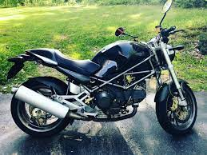

Технические характеристики - DUCATI MONSTER 900 S
Топливная система питания - Инжектор
Тип(вид) мотора - V2
Тип мотора - 4-х тактный
Наличие центральной - подножки Нет
Тип привода колеса - Цепь
Коробка передач - мех. 5-х ступч.
Тормоза передние - 2х дисковые
Тормоза задние - Диск
Тип задней ходовой - Простой двухсторонний маятник
Задний амортизатор - 1 амортизатор
Приборная панель - Аналоговая